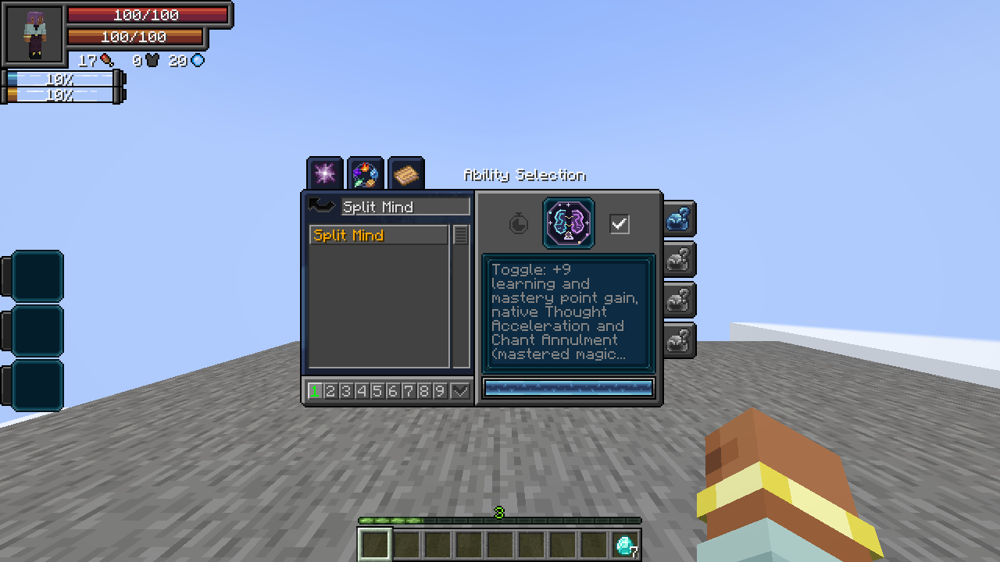
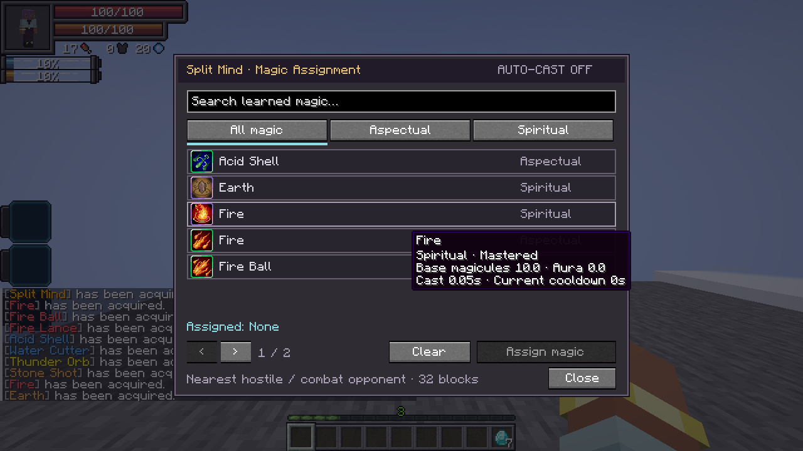
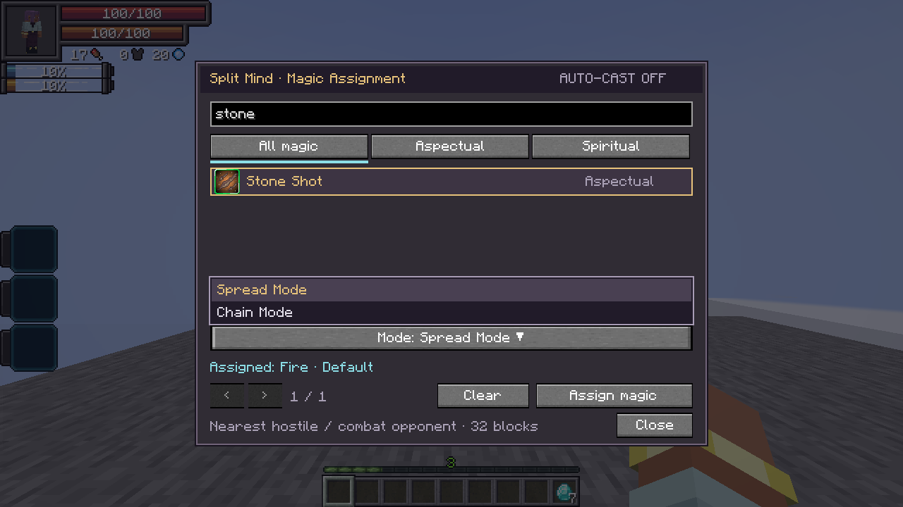
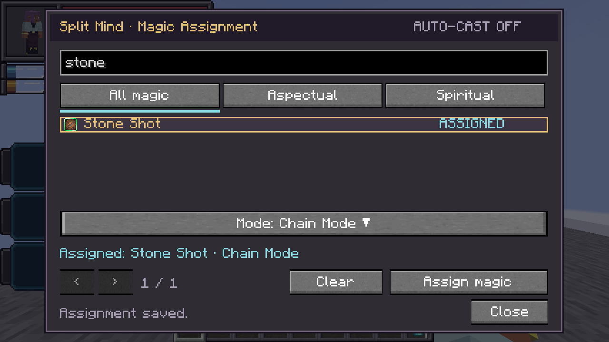

On this page
Parallel Thought · Passive, Toggle
- Learning point gain +9.
- Mastery point gain +9.
- Chant Annulment: mastered magic casts instantly, following Tensura’s native rule.
- Thought Acceleration: native movement/attack/chant bonuses and its mastered dodge-window bonus.
Enable the passive checkbox in Skills → Unique. It does not require a skill slot. Damage type: None.
Magic Assignment · Active, Press
Open the searchable list of your learned aspectual and spiritual magic. Filter by type, select a spell, then choose Assign magic. For a spell with multiple modes, open the Mode dropdown and choose the mode to cast. Locked modes require their normal learning or mastery before they can be assigned. Only one magic and mode can be assigned. Clear removes it and stops Auto-Cast. The assignment is saved with the skill.
Damage type: None. Cost / cooldown: None.



Auto-Cast · Active, Toggle
Press to enable or disable automatic casting. It targets the nearest visible hostile mob or combat opponent within 32 blocks. Allies, owned creatures, passive bystanders and protected players are excluded; player opponents require permitted PvP.
- Uses the assigned magic’s selected mode, native damage, cooldown and casting requirements.
- Mastered Split Mind: Auto-Cast uses 25% fewer magicules, including repeat/held pulses. Aura costs and manually cast magic keep their normal costs.
- Checks for an available cast every 5 ticks. Unmastered magic finishes its normal accelerated cast time; mastered magic benefits from Chant Annulment while the passive is enabled.
- Repeat/held modes remain active at their native cadence while a target is valid; each pulse pays its normal cost.
- Delayed shots keep the assigned target through their launch delay; no extra homing is added.
- Tracks the target during casting. Cancels if the target leaves range, becomes protected or disappears, or if the magic becomes unavailable.
- Auto-Cast does not apply casting slowdown or camera zoom. You can manually chant and cast a different spell at the same time. Manually using the assigned spell pauses its automatic cast because they share one cooldown and casting state. Self-targeted and buff magic retain their native behavior.
Successful paid casts train Split Mind; menu clicks and toggle switching do not. This switch is independent of the passive checkbox. Damage type: Whatever the assigned magic normally deals. Cost: Its normal aura; 75% of its magicule cost when Split Mind is mastered. Cooldown: Its normal cooldown; no additional Split Mind cooldown.
Split Mind is excluded from Fettered Human starting rolls because Auto-Cast uses magicule-cost abilities. The usual server allowlist can override that rule.